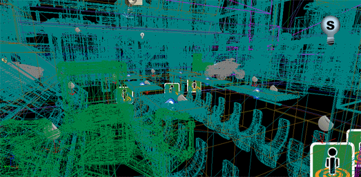
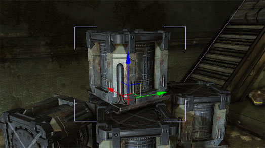
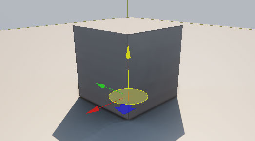

UDN
Search public documentation:
UnrealEditorPreferencesCH
English Translation
日本語訳
한국어
Interested in the Unreal Engine?
Visit the Unreal Technology site.
Looking for jobs and company info?
Check out the Epic games site.
Questions about support via UDN?
Contact the UDN Staff
日本語訳
한국어
Interested in the Unreal Engine?
Visit the Unreal Technology site.
Looking for jobs and company info?
Check out the Epic games site.
Questions about support via UDN?
Contact the UDN Staff
虚幻编辑器的偏好设置菜单
概述
视口渲染 & 导航
- Flight Camera Controls（飞行相机控制）
- 这个设置决定了是否使用飞行相机及如何访问它。飞行相机使用W、A、S和D键来推动和平移相机，和标准的FPS控制的工作方式类似。W和S向内和外推动相机，而A和D从一侧向另一侧平移或扫过相机。当激活该项时，这将覆盖使用这些控制的任何热键，包括用于切换‘显示标志’的热键。
选项 描述 Use WASD for Camera Controls（使用WASD控制相机） 总是激活飞行相机和WASD控制。 Use WASD Only When Right Mouse Button is Held(仅当按下鼠标右键时使用WASD控制) 仅当按下鼠标右键时才激活飞行相机和WASD控制。 Never Use WASD for Camera Controls(永远不适用WASD相机控制) 永远不激活飞行相机和WASD控制。 - Grab and Drag to Scroll Ortho Cameras（获取并拖拽来滚动正交相机）
- 如果启用该项，那么在正交视口中点击鼠标左键或右键并拖拽鼠标将会滚动相机。从本质上讲，这在实际操作意味着当您点击并拖拽时场景将会随着鼠标移动。如果禁用该项，场景将向鼠标相反的方向移动。
- Zoom to Cursor Position(缩放到光标位置处)
- 如果启用该项，在正交视口中进行缩放操作将会围绕鼠标光标中心进行。当禁用该项，缩放将以视口中央为中心进行。
- Link Orthographic Viewport Movement(链接正交视口运动)
- 如果启用该项，那么所有正交视口将会被链接，使它们聚焦到同一位置。从而当在一个正交视口中移动相机时将会导致其他正交视口跟随着移动。当禁用该项时，则独立地导航所有视口。
- Resize Top and Bottom Viewports Together（顶部和底部视口大小同时进行调整）
- 如果启用该项， 2x2分割配置模式中的左侧视口和右侧视口之间的分隔条将会同时影响顶部和底部视口。当禁用该项时，顶部视口间的分隔条仅影响顶部视口，底部视口之间的分割条仅影响底部视口。
- Aspect Ratio Constraint(长宽比限制)
- 稍后完成
选项 描述 Maintain Y-Axis FOV Maintain X-Axis FOV Maintain Major Axis FOV - Enable Wireframe Halos (Perspective Views)（启用线框光环(透视图)）
- 如果启用该项，那么在透视口中将会在线框周围使用光环后期处理特效。这使得在线框模式中查看透视口时可以更加容易地辨别深度。

- Perspective Viewports Default to Real Time(默认设置透视口为实时模式)
- 如果启用该项，那么透视口默认将总是启用实时更新。当在编辑器中处理复杂的关卡时这可能潜在地造成一些性能影响。
- Use Camera Location from Play-In-Viewport(使用‘在视口中播放’模式的相机位置)
- 如果启用该项，那么当退出时视口的相机位置和旋转度将设置为在视口中播放模式中的相机的位置和旋转度。
- Auto-Updating BSP Visualization(自动更新BSP可视化效果)
- 如果启用该项，那么当修改画刷actor时将会在视口中自动地更新BSP几何体。当启用该项时，必须重新构建几何体来查看是否对画刷actors进行了任何修改。*Ctrl + Alt + U* 用于切换该选项。
 警告: 在运行关卡前需要手动地重新构建几何体!
警告: 在运行关卡前需要手动地重新构建几何体!
选择 & 变换
- Highlight Objects Under Mouse Cursor(高亮显示鼠标光标下的对象)
- 如果启用该项，那么当鼠标光标悬停到是视口中的对象上时它将会高亮显示。

- Highlight Selected Objects With Brackets(使用边框高亮显示选中的对象)
- 如果启用该项，选中的对象在视口中将会通过边框高亮显示而不是以视图模式显示。

- Use Absolute Translation(使用绝对平移)
- 如果启用该项，那么平移变换作为绝对平移处理。当禁用该项时，平移作为相对于前一个位置处理，并且改变的量会显示在状态条中。
- Enable Combined Translate/Rotate Tool(启用组合的 平移/旋转 工具)
- 如果启用该项，当使用 空格键 循环切换变换控件时将会在Uniform Scale(非均匀缩放)工具后面包含组合的平移和旋转-Z工具。

- Clicking BSP Selects Brush(点击BSP选中画刷)
- 如果选中该项，点击BSP表面选中画刷，并且按下 Ctrl + Shift + 点击 选中表面。 当禁用该项时，则进行相反的操作； 点击鼠标选中表面，按下 Ctrl + Shift + 点击 键选中画刷。
内容
- Preserve Actor Scale on Replace(替换时Actor保持比例)
- 如果启用该项，当使用新的Actor替换现有actor时，维持现有actor的比例。当禁用该项时，无论现有actor的缩放比例为多少，新的actor的缩放比例将重置为1.0。
- Prompt for Checkout on Package Modification(提示迁出修改的包)
- 如果启用该项，那么任何时候当source control中的包发生修改时，将会出现提示要求迁出它。
- Aut-Reimport Textures(自动重新导入贴图)
- 如果启用该项，则监视贴图的源文件，当源文件发生改变时则自动重新导入贴图。
- Apply GFx Movie Changes to Play In Editor(从’在编辑器中播放‘应用GFx视频修改)
- 如果启用该项，那么将会监测Scaleform GFx用户界面文件，当编辑器打开过程中文件发生修改时，以’在编辑器中播放‘模式运行游戏时将会应用该修改。
- Always Optimize Content for Mobile（总是为移动设备平台优化内容）
- 如果启用该项，将会对编辑器中的关卡和资源应用优化，以便准备在移动设备上使用。最显著的情况是，当安装针对移动设备的游戏时将执行完全的PVRTC压缩而不是一半的快速压缩(较低的质量)。
- Use Curves for Distributions(使用分布曲线)
- 如果启用该项，当在编辑器中渲染分布时，分布将使用曲线展现而不是烘焙的查找表格。
- Load Simple Level At Startup(启动时加载简单关卡)
- 如果启用该项，那么当编辑器运行时将加载
*Editor.ini文件的[UnrealEd.SimpleMap]部分的SimpleMapName属性指定的地图。 - Language(语言)
- 设置编辑器的UI元素所使用的语言。